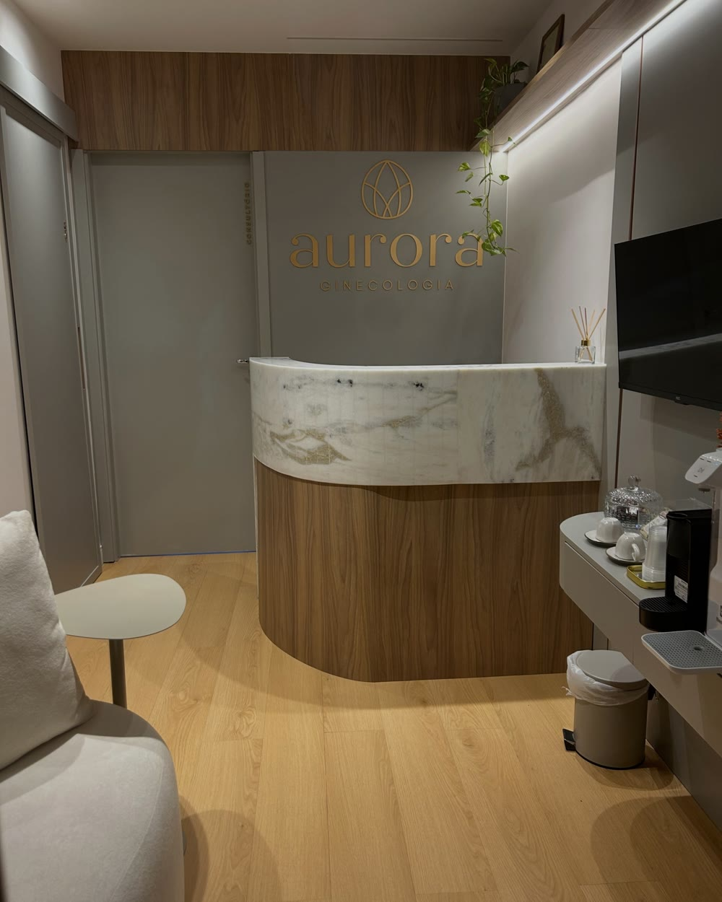
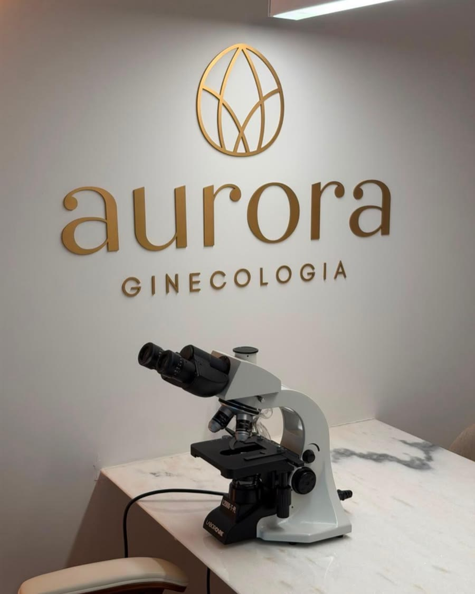
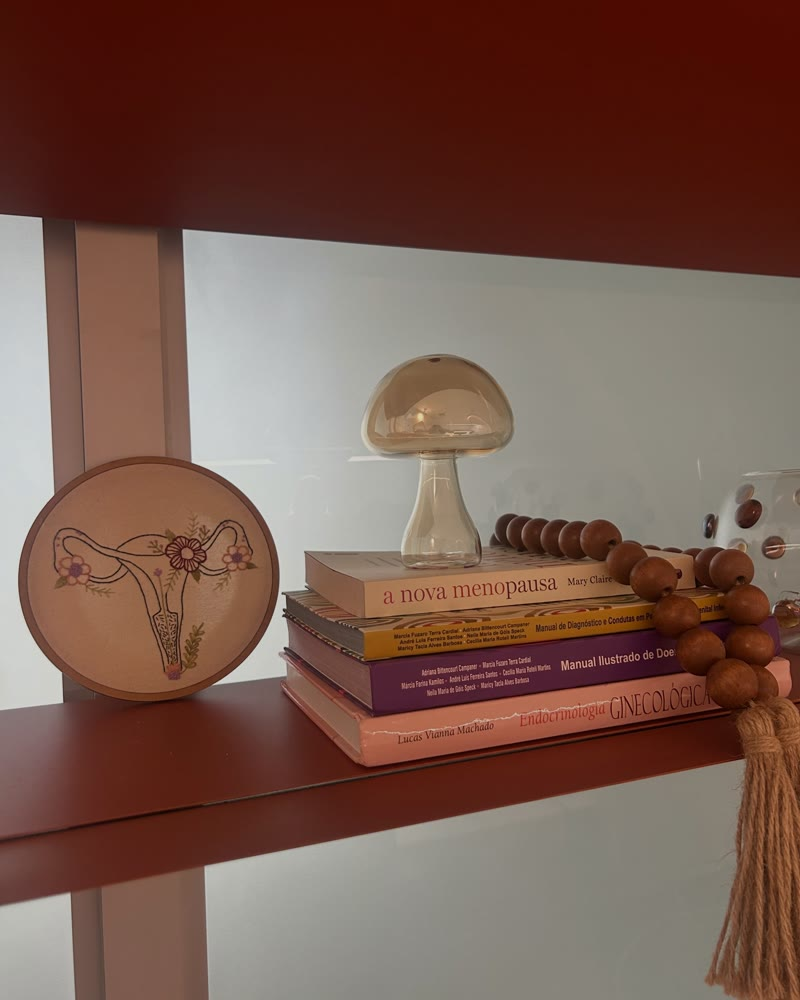

Ginecologia · Salvador
Ginecologia · Salvador
Aurora Ginecologia
Consulta sem pressa, com a microscopia do conteúdo vaginal feita dentro da própria consulta.
Clínica das ginecologistas Carolina Vinhas e Ana Carolina Scavuzzi, as duas com RQE em Ginecologia e Obstetrícia. No Mundo Plaza, Caminho das Árvores, Salvador.

Por onde começar
O que trouxe você até aqui?
Escolha o assunto e leia no seu tempo. Cada página explica como é a avaliação na Aurora. A conduta é individual, definida em consulta.
Tenho um corrimento que vai e volta
Coceira, ardor, odor ou tratamentos que não resolveram.
Corrimento e saúde íntimaMicroscopiaO que é a microscopia?
O que a lâmina mostra e por que ela é feita na consulta.
MicroscopiaRotinaQuero uma consulta de rotina
Preventivo, contracepção e dúvidas, com tempo.
A consultaAs médicasQuero conhecer as médicas
Carolina Vinhas e Ana Carolina Scavuzzi.
As duas CarolsTambém: Onde atendemos
Microscopia na consulta
Por que a lâmina vem junto da conversa.
A microscopia do conteúdo vaginal é feita durante a consulta, e não de forma avulsa. O resultado só faz sentido junto com a história de cada mulher.
“Para dar sentido à microscopia, precisamos conhecer a mulher por trás do exame.”Aurora Ginecologia
Sintomas, rotina e o que já foi tentado antes.
A consultaExame ginecológico cuidadoso, explicado passo a passo.
A consultaMicrobiota vaginal, lactobacilos, formas fúngicas e sinais de inflamação.
MicroscopiaDiferenciar candidíase, vaginose bacteriana e infecções mistas ajuda a direcionar o tratamento.
Saúde íntimaComo é a consulta
Consulta sem pressa, do começo ao fim.
“Consulta ginecológica apressada e superficial? Por aqui, não.” — Aurora Ginecologia
- Passo 1Escuta
A sua história, ouvida com tempo.
- Passo 2Dúvidas
Todas as perguntas respondidas: “sim, todas mesmo”.
- Passo 3Exame físico
Um exame ginecológico cuidadoso, explicado.
- Passo 4Microscopia
Quando indicada, a lâmina é avaliada ali mesmo, durante a consulta.
- Passo 5Plano
Exames complementares que fazem sentido para o seu caso e a orientação de tratamento.
Dor pélvica forte, febre, sangramento intenso ou desmaio? Não espere a consulta: procure um pronto-atendimento ou o SAMU (192). A clínica atende com hora marcada e não é serviço de urgência.
As médicas
“Se uma Carol cuida bem, imaginem duas.”
A Aurora começou em meados de 2025, quando duas ginecologistas juntaram a coragem ao sonho. A marca foi desenhada pelas próprias mãos delas, e as portas abriram em 2026.

Na foto, Carolina à esquerda e Ana Carolina à direita.
Nas palavras delas
“A ideia é simples: você sair da consulta entendendo o que está acontecendo com a sua saúde e não com mais dúvidas do que quando entrou.”Aurora Ginecologia
“Tratar corrimento não pode ser um jogo de adivinhação. Um bom tratamento começa por um diagnóstico bem-feito.”
Aurora Ginecologia“Construir a Aurora não terminou quando abrimos as portas. Na verdade, estava só começando.”
Carolina Vinhas e Ana Carolina ScavuzziAvaliações no Google
O que as pacientes contam.
12 avaliações na ficha pública · trechos com nome abreviado
Atendimento pontual, uma consulta com duração de 1 hora, em que consegui tirar todas as minhas dúvidas com calma.
Amei cada cantinho da clínica! Atendimento impecável, com muita empatia, acolhimento e humanidade.
É muito atenciosa, explica tudo com calma e clareza e se preocupa de verdade em deixar a paciente confortável e tranquila durante o atendimento.
Amei a consulta! Fui acolhida, minhas dúvidas sanadas e estou muito feliz com o tratamento!
Conteúdos
Para ler antes da consulta.
O que a Aurora publica sobre microscopia, corrimento e saúde íntima.
Para dar sentido à lâmina, é preciso conhecer a mulher.
Ler ↗MicroscopiaO que a microscopia avaliaMicrobiota, lactobacilos, fungos e sinais de inflamação.
Ler ↗Corrimento“Corrimento é só olhar”?Por que vulvovaginites podem parecer iguais no exame.
Ler ↗Saúde íntimaO que comprar (e não comprar) na farmáciaNem tudo da prateleira é adequado para a saúde íntima.
Ler ↗O espaçoTour pela AuroraCada ambiente pensado para conforto e privacidade.
Ler ↗As médicasConheça a Dra. Carolina VinhasTrajetória, formação e o propósito da Aurora.
Ler ↗O espaço
Mundo Plaza, sala 303.
No Caminho das Árvores, em Salvador. “Cada ambiente foi pensado para proporcionar conforto, privacidade e uma experiência mais leve durante sua consulta.”



Av. Tancredo Neves, 620 · Caminho das Árvores · Salvador – BA · 41820-020
Como chegarAgende pelo WhatsApp (71) 99670-2932.
Dúvidas frequentes
Perguntas comuns
Vocês fazem microscopia avulsa?
Não. A microscopia é feita dentro da consulta, porque o resultado só faz sentido junto com a história, os sintomas e o exame físico de cada mulher.
Quem faz a consulta?
As ginecologistas Carolina Vinhas (RQE 22183) e Ana Carolina Scavuzzi (RQE 24958).
A consulta é demorada?
A consulta é feita sem pressa, com tempo para ouvir e responder às dúvidas. Confirme a duração ao agendar.
Vocês colocam DIU?
A inserção de DIU faz parte dos atendimentos da clínica. A indicação do método é definida em consulta.
Atendem plano de saúde?
Confirme pelo WhatsApp as formas de atendimento aceitas hoje.
Qual é o horário?
A ficha do Google informa segunda a sexta, das 8h às 17h, com hora marcada.
Agende
Um novo olhar sobre a sua saúde. Comece pela consulta.
Consulta com hora marcada no Mundo Plaza, Caminho das Árvores, Salvador. Fale pelo WhatsApp (71) 99670-2932.